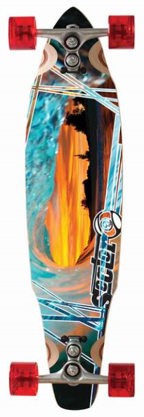
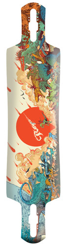
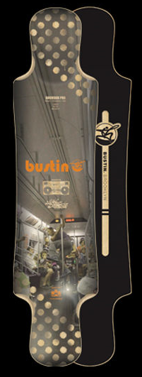
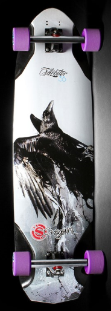

成立於1993年的
Sector 9
是美国最受欢迎的Longboard品牌，
致力于呈现马路冲浪、城市探险与高速滑行的自由豪放精神。
拥有非常多制造专利技术与强大的选手阵容，包括世界冲浪长板冠军Joel Tudor、
滑板選手Mike Morrissey、Tyler Martin、Louis Pilloni等一流明星。


来自加拿大温哥华的专业级Longboard厂牌， 板面100％在温哥华原厂制造。品牌Team在各项Longboard赛事中都有很优异的表现， 为了不断夺取各项赛事的冠军，
Rayne
不断地与职业Riders研发更多创新的制板技术，结构與板型。
用不同的板型、结构、材质和弹性来搭配不同玩家的需求和特质。杀手级的Longboard!
成立自2002年，来自美国纽约布鲁克林的Longboard品牌
Bustin
，拥有浓浓的美东风格。
除了板面都在美国北卡的工厂制成，而后送到纽约印刷以外，
板型的设计也深受雪板运动与纽约街头艺术的风格影响。
如果你也自诩是Urban Hipster，那你一定得踩上Bustin，感受他的魅力。


2002年，美国的Brad与Scott Imbrie兄弟俩成立了自己的滑板品牌。 当时Scott刚刚过完20岁生日，而Brad只有17岁。他们的第一笔资金是原本准备用来供他们上大学的钱。
Original
相信长板不应该只是“加长的动作板”这么简单，滑手也不能仅仅为了模仿冲浪的动作而滑板。
他们始终以“原创”的态度和技术向前推动长板运动，独创的板桥设计已经申请专利。
创始人之一的Brad Imbrie同时还是一位不错的摄影师。